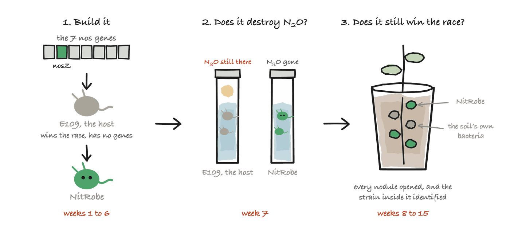

Experiment 2: build NitRobe
Experiment 1 will probably find species that destroy N₂O. They were shortlisted for carrying the genes, so several of them should.
Destroying N₂O is the easier half. A strain also has to beat the bacteria already in the soil to the roots, and the ones that win that race are the strains farmers already buy, which mostly carry no nos genes at all. This experiment closes that gap from the other side. It takes a strain that already wins, and gives it the genes.
It tests the 2 things the whole idea rests on, in 1 run. Does the modified bacterium destroy N₂O, and has adding the genes cost it the competitiveness that made it worth choosing in the first place?

In short
| The experiment | In 1 line |
|---|---|
| What we do | Put the nos genes into the strain that already wins the race into the roots, then test it twice: once for the N₂O, once for the race |
| What we measure | Nitrous oxide above the liquid in the vials, then which strain is inside each nodule in the pots |
| What it tells us | Whether NitRobe destroys N₂O, and whether it still beats the bacteria already in the soil to the roots. If it destroys N₂O and loses that race, the idea fails |
| How long it takes | About 4 months, most of it building the strain. Only 9 weeks of it is experiment |
What gets built
The recipient is B. japonicum E109, the elite strain sold across Argentina. It wins the race into soybean roots, and the gene finder found it has no nos genes. Soybeans given E109 release 18.4 times more nitrous oxide than soybeans given USDA 110 or CPAC 7, which do carry them. Same crop, same conditions, and the only difference is which bacterium came out of the bag. That is the whole reason E109 is the one to change.
The donor is USDA 110, which carries the genes already. The 7 of them are copied across as one printed piece of DNA, 10,919 bases, and put into a fixed place in E109's genome rather than left on a plasmid that can be lost.
The 7 genes that get copied
Every one is read from B. diazoefficiens USDA 110, and every accession is a protein anybody can download.
| # | Gene | What it does | Protein | Bases |
|---|---|---|---|---|
| 1 | nosR | Switches the rest of them on | Q89XJ7 |
2,337 |
| 2 | nosZ | Builds the enzyme itself | Q89XJ6 |
1,950 |
| 3 | nosD | Carries copper in the space outside the cell | Q89XJ5 |
1,359 |
| 4 | nosF | Pumps the copper | H7C7Y2 |
906 |
| 5 | nosY | Pumps the copper | H7C6F5 |
825 |
| 6 | nosL | Hands the copper over | H7C803 |
546 |
| 7 | nosX | Finishes the enzyme off | Q89XJ4 |
996 |
8,919 bases of gene, plus the pieces that make them work in a new host, is 10,919 in all. Printed DNA of that length costs between $764 and $1,638.
Only nosZ builds the enzyme that destroys N₂O. The other 6 fetch the copper that enzyme needs, put it in the right place and switch it on, so nosZ arriving on its own produces an enzyme that does nothing. That claim is what group 3 below is for.
Part 1: does the enzyme work?
Same sealed vials as experiment 1: 10 mL of growth medium, the air flushed out, the same dose of nitrous oxide in the space above the liquid.
| Group | Strain in the vial | Why it is here |
|---|---|---|
| 1 | E109, unmodified | Should do nothing. It has no gene |
| 2 | E109 with the whole set of genes | The question |
| 3 | E109 with only the main gene | Shows whether the rest of the set was really needed |
| 4 | USDA 110 | The positive control, a strain that does this naturally |
3 vials of each, so no single lucky vial decides anything. 4 groups times 3 is 12 vials, read 5 times each, which is 60 readings on the gas chromatograph. 1 week.
Group 3 is the interesting one. This project says the main gene alone does nothing, and that the whole set has to travel together. Group 3 is where that claim is confirmed or shown to be overcautious.
Part 2: is it still a winner?
Only run if part 1 works. Real field soil that has grown soybean before, so it already holds the rhizobia the build has to beat.
| Group | What goes on the seed | Why it is here |
|---|---|---|
| 1 | Nothing | What the residents do alone |
| 2 | E109, unmodified | The strain as sold |
| 3 | E109, modified | The question |
| 4 | Groups 2 and 3 mixed half and half | The head-to-head. Same soil, same plant, same week |
10 pots per group, so 4 groups is 40 pots. 8 weeks, then 10 nodules opened from every pot and the strain inside each one identified, which is 400 nodules in all.
A nodule is the lump a rhizobium builds on a root and lives inside. Which strain is in which nodule is the whole of part 2: the number that matters is the share of nodules taken by the modified strain in group 4, where both strains were put on the same seed.
Why 4 months for 9 weeks of experiment
The building is the slow part. The testing is 1 week of vials and 8 weeks of pots. Everything before that is making the strain and proving it is what you think it is.
| What happens | When | |
|---|---|---|
| 1 | Order the 7 genes as printed DNA and wait for it | weeks 1 to 3 |
| 2 | Put it into E109 and pick colonies that took it | weeks 3 to 5 |
| 3 | Sequence the result and confirm what went in | week 6 |
| 4 | Part 1. 12 vials, 5 readings over 96 hours | week 7 |
| 5 | Part 2. 40 pots, then 400 nodules opened | weeks 8 to 15 |
Nothing is grown until sequencing confirms the build. A strain that behaves oddly for an unknown reason is 4 months wasted, and the greenhouse half is the expensive half.
Getting hold of what it takes
E109 is the hard one. It is a commercial strain in Argentina rather than a culture-collection staple, so it has to come from the company that sells it or from a laboratory that already works on it. USDA 110 is free from the USDA collection at Beltsville, and the DNA is printed to order, so neither of those is in doubt.
If E109 cannot be had, the experiment still runs. Any strain that wins the race into the roots and lacks the genes will do, and the gene finder read 40 genomes to find which ones those are. E109 is the best example, not the only one.
What each outcome means
| If | Then |
|---|---|
| Part 1 works and the build holds its share of nodules | The central prediction is confirmed. The simulation said it should grow faster, and it is at least not growing slower |
| Part 1 works but it takes fewer nodules | Adding the genes cost it its edge, and the inversion fails. Worth knowing before anybody scales it |
| Part 1 fails and group 2 destroys no N₂O | The genes moved but the enzyme does not work in this host. The most likely way this project dies, which is why part 1 runs first |
| Group 3 works as well as group 2 | The main gene was enough on its own, and this project was more cautious than it needed to be |
What a lab would need to lend us
| What it needs | Detail |
|---|---|
| Bench space | A molecular biology bench, an incubator shelf, and a greenhouse bench for about 40 pots |
| Equipment | CRISPR reagents for this genus, sequencing, a gas chromatograph, and a way to identify which strain is inside a nodule |
| Biosafety | BSL-1 for the testing. The build itself is genetic modification and follows the institution's own rules. Everything is autoclaved, pots and soil included, and nothing leaves the building alive |
| How long | About 4 months, most of it the build, with a student on site weekly and present for the harvest |
From us: the construct design, the genes as printed DNA, the blank data sheets and the analysis, all written already.
The paperwork
The numbers go on 3 blank sheets, and every column on them is defined in the codebook. Only things read off an instrument get written down. Percentages and averages are worked out afterwards, so the number they came from is never lost.
| Sheet | What goes on it |
|---|---|
builds.csv |
What was made, how, and whether the sequence was confirmed |
headspace.csv |
The vial stage, same readings as experiment 1 |
nodules.csv |
The pot stage, 1 row per nodule opened |
The analysis was written before any data existed, and it has already been run on invented numbers 3 times, including a run where the experiment fails.
| Dry run | What it pretends happened | What the analysis says |
|---|---|---|
build-works |
The build destroys N₂O and keeps its nodules | Yes on both halves |
nosz-alone-is-enough |
The strain given only the main gene does as well as the whole set | Yes, and the build can be simplified |
build-lost-the-race |
The build destroys N₂O and loses its nodules | No. The invention fails on its central claim |
None of these is evidence of anything. They are proof that the analysis tells the truth before there is any truth to tell.
Why this is worth doing even if it fails
Nobody has put the nos genes into a strain chosen for beating other bacteria to the roots. For 13 years the work went the other way round: start with a strain that already destroys N₂O, then try to make it compete. None of it has become a product.
So both answers are worth having. Either NitRobe destroys N₂O and still takes its share of the nodules, which is the invention working, or it takes fewer than plain E109 did, which would mean carrying the genes costs a strain something. Nobody has measured that cost either way.
Group 3 pays its own way too. It is E109 given nosZ and nothing else. This project says all 7 genes have to travel together, and group 3 is the only place that is put to the test. If nosZ turns out to be enough on its own, every build of this kind after ours is 6 genes shorter.